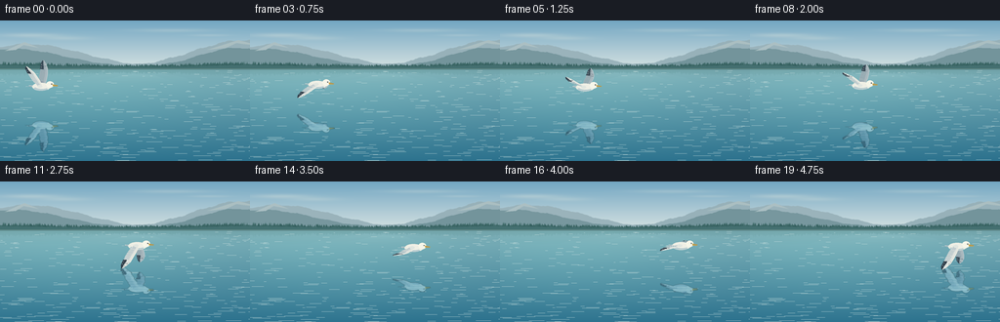
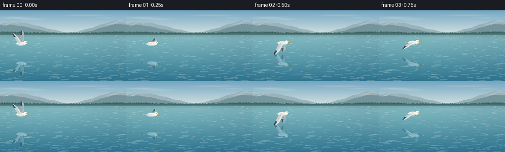
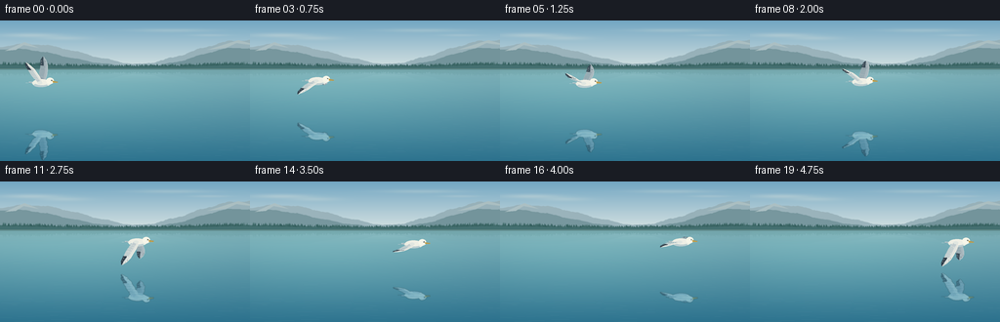
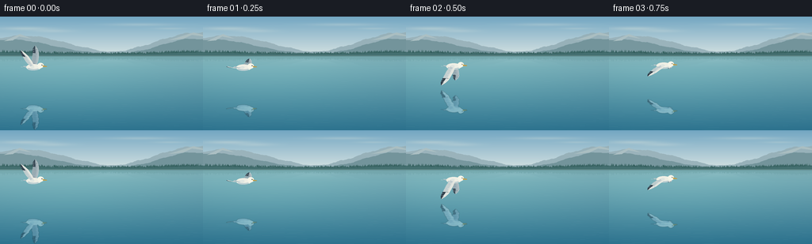

CODING AGENTS AS PIXEL WORLD MODELS
traex/GPT-6.1-Sol · phygen_056
点击播放 · 原生 RGB 像素
逐轮保存的候选
回放视频、检查图与代码变化。
每份候选均可单独播放。实际图片检查记录在下方工具轨迹中。
候选 01播放与检查图
点击播放 · 原生 RGB 像素


展开代码变化
--- 上一保存版本
+++ 本次保存版本
@@ -0,0 +1,199 @@
+from pathlib import Path
+import json, math
+import numpy as np
+from PIL import Image, ImageDraw, ImageFilter
+import artifact_io
+
+ROOT=Path(__file__).resolve().parent
+SPEC=json.loads((ROOT/'task_spec.json').read_text())
+W,H=SPEC['width'],SPEC['height']; S=4
+WW,HH=W*S,H*S
+rng=np.random.default_rng(56)
+
+def polygon(draw, pts, color):
+ draw.polygon([(round(x*S),round(y*S)) for x,y in pts], fill=color)
+def line(draw, pts, color, width=0.3):
+ draw.line([(round(x*S),round(y*S)) for x,y in pts], fill=color, width=max(1,round(width*S)))
+def ellipse(draw, box, col):
+ draw.ellipse(tuple(round(z*S) for z in box),fill=col)
+
+# A quiet alpine lake, drawn at four times the output resolution.
+y,x=np.mgrid[0:HH,0:WW].astype(float); yy=y/S; xx=x/S
+horizon=48.5
+sky_a=np.array([114,166,194.]); sky_b=np.array([211,225,225.])
+f=np.clip(yy/horizon,0,1)[...,None]
+base=sky_a[None,None,:]*(1-f)+sky_b[None,None,:]*f
+base=np.broadcast_to(base,(HH,WW,3)).copy()
+# High, thin cirrus, not competing with the bird.
+cloud=np.zeros((HH,WW))
+for cx,cy,rx,ry,alpha in [(32,15,30,2.1,.27),(66,18,25,2,.19),(176,10,42,1.8,.20),(215,15,20,1.2,.16)]:
+ cloud+=alpha*np.exp(-((xx-cx)/rx)**2-((yy-cy)/ry)**2)
+base=base*(1-cloud[...,None])+np.array([244,241,225])[None,None,:]*cloud[...,None]
+water=np.clip((yy-horizon)/(H-horizon),0,1)
+watercolor=np.array([127,177,185.])[None,None,:]*(1-water[...,None])+np.array([43,112,140.])[None,None,:]*water[...,None]
+# Broad luminous areas on the clear water, with smooth, weak reflections of sky.
+glow=np.exp(-((xx-80)/150)**2)*np.exp(-((yy-78)/58)**2)
+watercolor+=glow[...,None]*np.array([9,13,10])
+base=np.where((yy>=horizon)[...,None],watercolor,base)
+scene=Image.fromarray(np.uint8(np.clip(base,0,255)))
+d=ImageDraw.Draw(scene)
+
+def ridge(seed,left,right,peak,height,rough=1.0):
+ rr=np.random.default_rng(seed)
+ xs=np.linspace(left,right,160)
+ center=np.exp(-((xs-peak)/(0.39*(right-left)))**2)
+ ys=48-height*center
+ ys+=rough*(np.sin(xs*.21)+.38*np.sin(xs*.61)+.19*np.sin(xs*1.4))
+ return [(left,49)]+list(zip(xs,ys))+[(right,49)]
+# Atmospheric depth: pale mountains, blue foothills, and a narrow evergreen bank.
+polygon(d,ridge(1,-40,161,29,24,.55),(154,179,187))
+polygon(d,ridge(2,119,305,250,28,.65),(151,177,185))
+polygon(d,ridge(3,-65,125,13,19,.44),(119,151,158))
+polygon(d,ridge(4,164,306,243,20,.46),(115,148,155))
+# A few soft crags and sunlight planes.
+polygon(d,[(5,31),(25,22),(40,28),(29,26),(24,25),(16,30)],(171,191,195))
+polygon(d,[(212,30),(244,20),(267,26),(249,24),(242,23),(231,28)],(170,190,193))
+farshore=[]
+for i in range(WW+1):
+ u=i/S
+ h=46.8 - 2.1*np.exp(-((u-12)/48)**2)-2.7*np.exp(-((u-242)/42)**2)+.32*math.sin(u*.11)
+ farshore.append((u,h))
+polygon(d,[(0,50)]+farshore+[(W,50)],(68,111,112))
+# The forest is individually textured, but distant and restrained.
+for i in range(460):
+ u=float(rng.uniform(-3,259))
+ ground=47.3-1.5*np.exp(-((u-8)/55)**2)-1.9*np.exp(-((u-246)/40)**2)
+ ht=float(rng.uniform(1.0,4.2))*(.65+.35*abs(u-128)/128)
+ wid=float(rng.uniform(.40,1.2))
+ shade=int(rng.uniform(-7,8))
+ col=(57+shade,100+shade,99+shade)
+ polygon(d,[(u,ground-ht),(u-wid*.48,ground-ht*.45),(u-wid,ground),(u+wid,ground),(u+wid*.4,ground-ht*.48)],col)
+line(d,[(0,49.4),(256,49.4)],(160,186,181),.32)
+# Invert the very distant bank into the lake, fading quickly with distance.
+arr=np.asarray(scene).astype(float)
+for j in range(int(50*S),int(64*S)):
+ y0=j/S
+ src=int((99.3-y0)*S)
+ if 0<=src<HH:
+ weight=.27*np.exp(-(y0-50)/5.5)
+ displacement=np.sin(np.arange(WW)*.08+j*.15)*S*.30
+ cols=np.clip((np.arange(WW)+displacement).astype(int),0,WW-1)
+ arr[j]=arr[j]*(1-weight)+arr[src,cols]*weight
+background=Image.fromarray(np.uint8(np.clip(arr,0,255)))
+# Fixed gentle ripples: long horizontal streaks, wider and more separated nearby.
+ripples=[]
+for i in range(340):
+ ry=float(rng.uniform(51,145)); rx=float(rng.uniform(-15,271))
+ dep=(ry-49)/(H-49)
+ length=float(rng.uniform(2,15))*(.4+dep)
+ a=float(rng.uniform(.018,.070))*(.45+.55*dep)
+ ripples.append((rx,ry,length,a,float(rng.uniform(0,6.283))))
+
+# Geometric feathered gull. Coordinates X=forward,Y=span,Z=up.
+# A slight oblique view makes both wings visible and gives the feathers depth.
+def bird_image(t):
+ layer=Image.new('RGBA',(WW,HH),(0,0,0,0)); dr=ImageDraw.Draw(layer)
+ cx=43+170*t/(19/4)
+ cy=67.7+1.35*math.sin(2*math.pi*.94*t+.5)
+ theta=.90*math.cos(2*math.pi*.94*t)-.02
+ scale=.90
+ def proj(X,Y,Z):
+ return (cx+scale*(.88*X+.48*Y),cy+scale*(.11*X-.17*Y-.985*Z))
+ def pp(v): return proj(*v)
+ def poly3(points,color): polygon(dr,[pp(p) for p in points],color)
+ def ln3(points,col,width=.3): line(dr,[pp(p) for p in points],col,width)
+ def wing(side,far):
+ # Outer wing folds slightly behind the inner wing during the upstroke.
+ twist=.12*math.sin(2*math.pi*.94*t+.55)
+ def pos(s,X):
+ f=s/31
+ a=theta+twist*max(0,(f-.48)/.52)
+ return (X,side*(2+s*math.cos(a)),1.5+s*math.sin(a))
+ ss=np.array([0,4,10,16,22,27,31.])
+ lead=np.array([1.6,2.2,1.8,.7,-1.1,-4.6,-9.2])
+ chord=np.array([6.5,8,9.2,9.2,8.0,5.8,.2])
+ color=(169,184,190,255) if far else (225,228,222,255)
+ pts=[pos(s,l) for s,l in zip(ss,lead)]+[pos(s,l-c) for s,l,c in zip(ss[::-1],lead[::-1],chord[::-1])]
+ poly3(pts,color)
+ # Soft gray secondary feather panel, and a brighter leading edge.
+ panel=[pos(s,l-c*.38) for s,l,c in zip(ss[:-1],lead[:-1],chord[:-1])]
+ panel += [pos(s,l-c*.94) for s,l,c in zip(ss[-2::-1],lead[-2::-1],chord[-2::-1])]
+ poly3(panel,(140,156,168,255) if far else (193,204,207,255))
+ # Each flight feather is a tapered blade, placed with an overlapping root.
+ for s in np.linspace(6,20,10):
+ l=np.interp(s,ss,lead); c=np.interp(s,ss,chord)
+ feather=[pos(s-.75,l-c*.38),pos(s+.60,l-c*.40),pos(s+.85,l-c-1),pos(s+.25,l-c-1.35),pos(s-.55,l-c-.5)]
+ poly3(feather,(162,177,183,255) if far else (211,217,215,255))
+ ln3([pos(s+.65,l-c*.48),pos(s+.70,l-c-.7)],(120,142,156,140) if far else (148,168,178,160),.22)
+ # The black primary ends are a diagnostic feature of the gull.
+ for k,s in enumerate(np.linspace(21.0,29.7,7)):
+ l=np.interp(s,ss,lead); c=np.interp(s,ss,chord)
+ end=l-c-1.9+.12*k
+ feather=[pos(s-1.0,l-.7),pos(s+.8,l-.5),pos(min(31.4,s+1.25),end+1.25),pos(s+.4,end),pos(s-.5,end-.1)]
+ poly3(feather,(57,74,86,255) if far else (47,61,73,255))
+ # The inner half remains white-gray, creating dark tips, not black wings.
+ inner=[pos(s-.95,l-.75),pos(s+.75,l-.55),pos(s+.65,l-c*.61),pos(s-.65,l-c*.64)]
+ poly3(inner,(169,183,189,255) if far else (223,227,223,255))
+ if k in (1,3):
+ ln3([pos(s+.3,end+1.3),pos(s+.65,end+1.6)],(226,229,222,255),.45)
+ ln3([pos(s,l+.04) for s,l in zip(ss,lead)],(195,206,208,255) if far else (247,244,230,255),.45)
+ # Far wing behind breast and head.
+ wing(1,True)
+ # Layered fan-shaped tail, tapering into the body.
+ poly3([(-7,-2,-.1),(-19,-4,-.5),(-17,0,-.9),(-19,4,-.5),(-7,2,1)],(203,215,215,255))
+ for a in [-2,0,2]: ln3([(-17,a,-.6),(-9,a*.4,.3)],(148,169,179,220),.24)
+ # Smooth aerodynamic white torso with shaded lower belly.
+ center=pp((-1,0,.7))
+ bx,by=center
+ ellipse(dr,(bx-9.3,by-3.9,bx+8.9,by+4.1),(236,237,226,255))
+ ellipse(dr,(bx-7.7,by+.2,bx+6.8,by+4.0),(188,206,209,255))
+ ellipse(dr,(bx-6.9,by-3.6,bx+8.2,by+2.1),(239,239,229,255))
+ # White neck curves naturally into a compact gull head.
+ polygon(dr,[pp((4,0,1.4)),pp((7,0,5)),pp((12,0,5)),pp((13,0,2)),pp((8,0,-1.6))],(237,239,229,255))
+ hx,hy=pp((10.3,0,4.0))
+ ellipse(dr,(hx-3.8,hy-3.5,hx+3.8,hy+3.0),(247,246,233,255))
+ # Yellow hooked bill and tiny dark eye.
+ polygon(dr,[(hx+2.7,hy-.55),(hx+8,hy+.55),(hx+7.5,hy+1.4),(hx+2.8,hy+1.35)],(203,165,75,255))
+ line(dr,[(hx+3.5,hy+.45),(hx+7.6,hy+.75)],(121,114,85,255),.21)
+ ellipse(dr,(hx+1.1,hy-1.27,hx+2.05,hy-.32),(28,40,43,255))
+ ellipse(dr,(hx+1.42,hy-1.15,hx+1.66,hy-.91),(246,246,225,255))
+ # The closest wing occludes the back of the bird, never the head.
+ wing(-1,False)
+ qx,qy=pp((-1,-2,1.6))
+ ellipse(dr,(qx-3.0,qy-1.2,qx+2.0,qy+1.7),(224,230,224,255))
+ return layer,cx,cy
+
+frames=[]
+for i in range(SPEC['frames']):
+ t=i/SPEC['fps']
+ lake=background.copy().convert('RGBA')
+ rd=ImageDraw.Draw(lake,'RGBA')
+ for rx,ry,length,a,phase in ripples:
+ drift=.55*math.sin(t*.6+phase)
+ col=(205,226,224,int(a*255))
+ line(rd,[(rx+drift-length/2,ry),(rx+drift+length/2,ry)],col,.22)
+ bird,cx,cy=bird_image(t)
+ # Reflected rays are a strict vertical inversion about the water plane.
+ # Surface slopes provide minute horizontal offsets, never a detached shadow.
+ surface=87.4+.30*math.sin(t*.5)
+ pix=np.asarray(bird).astype(float)
+ rows=np.arange(HH); cols=np.arange(WW)
+ source_y=np.rint(2*surface*S-rows).astype(int)
+ valid=(source_y>=0)&(source_y<HH)&(rows>horizon*S)
+ refl=np.zeros_like(pix)
+ for j in np.flatnonzero(valid):
+ wy=j/S
+ dx=.30*math.sin(wy*1.25-t*1.6)+.16*math.sin(wy*3.3+t*.7)
+ src_x=np.clip(np.rint(cols+S*dx).astype(int),0,WW-1)
+ refl[j]=pix[source_y[j],src_x]
+ # Sky light and the blue water mix in the mirror image.
+ refl[:,:,:3]=refl[:,:,:3]*np.array([.70,.82,.88])+np.array([8,19,23])
+ bands=.85+.10*np.sin(yy*2.4+t*1.4)+.04*np.sin(yy*5.0-t*1.2)
+ refl[:,:,3]*=.67*bands
+ reflection=Image.fromarray(np.uint8(np.clip(refl,0,255))).filter(ImageFilter.GaussianBlur(.32*S))
+ lake=Image.alpha_composite(lake,reflection)
+ lake=Image.alpha_composite(lake,bird)
+ rgb=lake.convert('RGB').resize((W,H),Image.Resampling.LANCZOS)
+ frames.append(np.asarray(rgb,dtype=np.uint8))
+artifact_io.save(np.stack(frames),ROOT)
+print('Saved',len(frames),'RGB frames:',W,'x',H)
候选 02播放与检查图
点击播放 · 原生 RGB 像素


展开代码变化
--- 上一保存版本
+++ 本次保存版本
@@ -94,7 +94,7 @@
def bird_image(t):
layer=Image.new('RGBA',(WW,HH),(0,0,0,0)); dr=ImageDraw.Draw(layer)
cx=43+170*t/(19/4)
- cy=67.7+1.35*math.sin(2*math.pi*.94*t+.5)
+ cy=64.0+1.35*math.sin(2*math.pi*.94*t+.5)
theta=.90*math.cos(2*math.pi*.94*t)-.02
scale=.90
def proj(X,Y,Z):
@@ -167,15 +167,17 @@
for i in range(SPEC['frames']):
t=i/SPEC['fps']
lake=background.copy().convert('RGBA')
- rd=ImageDraw.Draw(lake,'RGBA')
+ ripple_layer=Image.new('RGBA',(WW,HH),(0,0,0,0))
+ rd=ImageDraw.Draw(ripple_layer)
for rx,ry,length,a,phase in ripples:
drift=.55*math.sin(t*.6+phase)
col=(205,226,224,int(a*255))
line(rd,[(rx+drift-length/2,ry),(rx+drift+length/2,ry)],col,.22)
+ lake=Image.alpha_composite(lake,ripple_layer)
bird,cx,cy=bird_image(t)
# Reflected rays are a strict vertical inversion about the water plane.
# Surface slopes provide minute horizontal offsets, never a detached shadow.
- surface=87.4+.30*math.sin(t*.5)
+ surface=90.0+.30*math.sin(t*.5)
pix=np.asarray(bird).astype(float)
rows=np.arange(HH); cols=np.arange(WW)
source_y=np.rint(2*surface*S-rows).astype(int)
可观测工具轨迹
实际执行的命令与返回图片。
命令 1exit 0
/bin/bash -lc 'ls -la && cat prompt.txt && cat GENERATION_RULES.md && cat task_spec.json'
命令 2exit 0
/bin/bash -lc "cat artifact_io.py && python - <<'PY'
import PIL,numpy
print('Pillow',PIL.__version__,'numpy',numpy.__version__)
PY"命令 3exit 0
/bin/bash -lc "cat > generate.py <<'PY'
from pathlib import Path
import json, math
import numpy as np
from PIL import Image, ImageDraw, ImageFilter
import artifact_io
ROOT=Path(__file__).resolve().parent
SPEC=json.loads((ROOT/'task_spec.json').read_text())
W,H=SPEC['width'],SPEC['height']; S=4
WW,HH=W*S,H*S
rng=np.random.default_rng(56)
def polygon(draw, pts, color):
draw.polygon([(round(x*S),round(y*S)) for x,y in pts], fill=color)
def line(draw, pts, color, width=0.3):
draw.line([(round(x*S),round(y*S)) for x,y in pts], fill=color, width=max(1,round(width*S)))
def ellipse(draw, box, col):
draw.ellipse(tuple(round(z*S) for z in box),fill=col)
# A quiet alpine lake, drawn at four times the output resolution.
y,x=np.mgrid[0:HH,0:WW].astype(float); yy=y/S; xx=x/S
horizon=48.5
sky_a=np.array([114,166,194.]); sky_b=np.array([211,225,225.])
f=np.clip(yy/horizon,0,1)[...,None]
base=sky_a[None,None,:]*(1-f)+sky_b[None,None,:]*f
base=np.broadcast_to(base,(HH,WW,3)).copy()
# High, thin cirrus, not competing with the bird.
cloud=np.zeros((HH,WW))
for cx,cy,rx,ry,alpha in [(32,15,30,2.1,.27),(66,18,25,2,.19),(176,10,42,1.8,.20),(215,15,20,1.2,.16)]:
cloud+=alpha*np.exp(-((xx-cx)/rx)**2-((yy-cy)/ry)**2)
base=base*(1-cloud[...,None])+np.array([244,241,225])[None,None,:]*cloud[...,None]
water=np.clip((yy-horizon)/(H-horizon),0,1)
watercolor=np.array([127,177,185.])[None,None,:]*(1-water[...,None])+np.array([43,112,140.])[None,None,:]*water[...,None]
# Broad luminous areas on the clear water, with smooth, weak reflections of sky.
glow=np.exp(-((xx-80)/150)**2)*np.exp(-((yy-78)/58)**2)
watercolor+=glow[...,None]*np.array([9,13,10])
base=np.where((yy>=horizon)[...,None],watercolor,base)
scene=Image.fromarray(np.uint8(np.clip(base,0,255)))
d=ImageDraw.Draw(scene)
def ridge(seed,left,right,peak,height,rough=1.0):
rr=np.random.default_rng(seed)
xs=np.linspace(left,right,160)
center=np.exp(-((xs-peak)/(0.39*(right-left)))**2)
ys=48-height*center
ys+=rough*(np.sin(xs*.21)+.38*np.sin(xs*.61)+.19*np.sin(xs*1.4))
return [(left,49)]+list(zip(xs,ys))+[(right,49)]
# Atmospheric depth: pale mountains, blue foothills, and a narrow evergreen bank.
polygon(d,ridge(1,-40,161,29,24,.55),(154,179,187))
polygon(d,ridge(2,119,305,250,28,.65),(151,177,185))
polygon(d,ridge(3,-65,125,13,19,.44),(119,151,158))
polygon(d,ridge(4,164,306,243,20,.46),(115,148,155))
# A few soft crags and sunlight planes.
polygon(d,[(5,31),(25,22),(40,28),(29,26),(24,25),(16,30)],(171,191,195))
polygon(d,[(212,30),(244,20),(267,26),(249,24),(242,23),(231,28)],(170,190,193))
farshore=[]
for i in range(WW+1):
u=i/S
h=46.8 - 2.1*np.exp(-((u-12)/48)**2)-2.7*np.exp(-((u-242)/42)**2)+.32*math.sin(u*.11)
farshore.append((u,h))
polygon(d,[(0,50)]+farshore+[(W,50)],(68,111,112))
# The forest is individually textured, but distant and restrained.
for i in range(460):
u=float(rng.uniform(-3,259))
ground=47.3-1.5*np.exp(-((u-8)/55)**2)-1.9*np.exp(-((u-246)/40)**2)
ht=float(rng.uniform(1.0,4.2))*(.65+.35*abs(u-128)/128)
wid=float(rng.uniform(.40,1.2))
shade=int(rng.uniform(-7,8))
col=(57+shade,100+shade,99+shade)
polygon(d,[(u,ground-ht),(u-wid*.48,ground-ht*.45),(u-wid,ground),(u+wid,ground),(u+wid*.4,ground-ht*.48)],col)
line(d,[(0,49.4),(256,49.4)],(160,186,181),.32)
# Invert the very distant bank into the lake, fading quickly with distance.
arr=np.asarray(scene).astype(float)
for j in range(int(50*S),int(64*S)):
y0=j/S
src=int((99.3-y0)*S)
if 0<=src<HH:
weight=.27*np.exp(-(y0-50)/5.5)
displacement=np.sin(np.arange(WW)*.08+j*.15)*S*.30
cols=np.clip((np.arange(WW)+displacement).astype(int),0,WW-1)
arr[j]=arr[j]*(1-weight)+arr[src,cols]*weight
background=Image.fromarray(np.uint8(np.clip(arr,0,255)))
# Fixed gentle ripples: long horizontal streaks, wider and more separated nearby.
ripples=[]
for i in range(340):
ry=float(rng.uniform(51,145)); rx=float(rng.uniform(-15,271))
dep=(ry-49)/(H-49)
length=float(rng.uniform(2,15))*(.4+dep)
a=float(rng.uniform(.018,.070))*(.45+.55*dep)
ripples.append((rx,ry,length,a,float(rng.uniform(0,6.283))))
# Geometric feathered gull. Coordinates X=forward,Y=span,Z=up.
# A slight oblique view makes both wings visible and gives the feathers depth.
def bird_image(t):
layer=Image.new('RGBA',(WW,HH),(0,0,0,0)); dr=ImageDraw.Draw(layer)
cx=43+170*t/(19/4)
cy=67.7+1.35*math.sin(2*math.pi*.94*t+.5)
theta=.90*math.cos(2*math.pi*.94*t)-.02
scale=.90
def proj(X,Y,Z):
return (cx+scale*(.88*X+.48*Y),cy+scale*(.11*X-.17*Y-.985*Z))
def pp(v): return proj(*v)
def poly3(points,color): polygon(dr,[pp(p) for p in points],color)
def ln3(points,col,width=.3): line(dr,[pp(p) for p in points],col,width)
def wing(side,far):
# Outer wing folds slightly behind the inner wing during the upstroke.
twist=.12*math.sin(2*math.pi*.94*t+.55)
def pos(s,X):
f=s/31
a=theta+twist*max(0,(f-.48)/.52)
return (X,side*(2+s*math.cos(a)),1.5+s*math.sin(a))
ss=np.array([0,4,10,16,22,27,31.])
lead=np.array([1.6,2.2,1.8,.7,-1.1,-4.6,-9.2])
chord=np.array([6.5,8,9.2,9.2,8.0,5.8,.2])
color=(169,184,190,255) if far else (225,228,222,255)
pts=[pos(s,l) for s,l in zip(ss,lead)]+[pos(s,l-c) for s,l,c in zip(ss[::-1],lead[::-1],chord[::-1])]
poly3(pts,color)
# Soft gray secondary feather panel, and a brighter leading edge.
panel=[pos(s,l-c*.38) for s,l,c in zip(ss[:-1],lead[:-1],chord[:-1])]
panel += [pos(s,l-c*.94) for s,l,c in zip(ss[-2::-1],lead[-2::-1],chord[-2::-1])]
poly3(panel,(140,156,168,255) if far else (193,204,207,255))
# Each flight feather is a tapered blade, placed with an overlapping root.
for s in np.linspace(6,20,10):
l=np.interp(s,ss,lead); c=np.interp(s,ss,chord)
feather=[pos(s-.75,l-c*.38),pos(s+.60,l-c*.40),pos(s+.85,l-c-1),pos(s+.25,l-c-1.35),pos(s-.55,l-c-.5)]
poly3(feather,(162,177,183,255) if far else (211,217,215,255))
ln3([pos(s+.65,l-c*.48),pos(s+.70,l-c-.7)],(120,142,156,140) if far else (148,168,178,160),.22)
# The black primary ends are a diagnostic feature of the gull.
for k,s in enumerate(np.linspace(21.0,29.7,7)):
l=np.interp(s,ss,lead); c=np.interp(s,ss,chord)
end=l-c-1.9+.12*k
feather=[pos(s-1.0,l-.7),pos(s+.8,l-.5),pos(min(31.4,s+1.25),end+1.25),pos(s+.4,end),pos(s-.5,end-.1)]
poly3(feather,(57,74,86,255) if far else (47,61,73,255))
# The inner half remains white-gray, creating dark tips, not black wings.
inner=[pos(s-.95,l-.75),pos(s+.75,l-.55),pos(s+.65,l-c*.61),pos(s-.65,l-c*.64)]
poly3(inner,(169,183,189,255) if far else (223,227,223,255))
if k in (1,3):
ln3([pos(s+.3,end+1.3),pos(s+.65,end+1.6)],(226,229,222,255),.45)
ln3([pos(s,l+.04) for s,l in zip(ss,lead)],(195,206,208,255) if far else (247,244,230,255),.45)
# Far wing behind breast and head.
wing(1,True)
# Layered fan-shaped tail, tapering into the body.
poly3([(-7,-2,-.1),(-19,-4,-.5),(-17,0,-.9),(-19,4,-.5),(-7,2,1)],(203,215,215,255))
for a in [-2,0,2]: ln3([(-17,a,-.6),(-9,a*.4,.3)],(148,169,179,220),.24)
# Smooth aerodynamic white torso with shaded lower belly.
center=pp((-1,0,.7))
bx,by=center
ellipse(dr,(bx-9.3,by-3.9,bx+8.9,by+4.1),(236,237,226,255))
ellipse(dr,(bx-7.7,by+.2,bx+6.8,by+4.0),(188,206,209,255))
ellipse(dr,(bx-6.9,by-3.6,bx+8.2,by+2.1),(239,239,229,255))
# White neck curves naturally into a compact gull head.
polygon(dr,[pp((4,0,1.4)),pp((7,0,5)),pp((12,0,5)),pp((13,0,2)),pp((8,0,-1.6))],(237,239,229,255))
hx,hy=pp((10.3,0,4.0))
ellipse(dr,(hx-3.8,hy-3.5,hx+3.8,hy+3.0),(247,246,233,255))
# Yellow hooked bill and tiny dark eye.
polygon(dr,[(hx+2.7,hy-.55),(hx+8,hy+.55),(hx+7.5,hy+1.4),(hx+2.8,hy+1.35)],(203,165,75,255))
line(dr,[(hx+3.5,hy+.45),(hx+7.6,hy+.75)],(121,114,85,255),.21)
ellipse(dr,(hx+1.1,hy-1.27,hx+2.05,hy-.32),(28,40,43,255))
ellipse(dr,(hx+1.42,hy-1.15,hx+1.66,hy-.91),(246,246,225,255))
# The closest wing occludes the back of the bird, never the head.
wing(-1,False)
qx,qy=pp((-1,-2,1.6))
ellipse(dr,(qx-3.0,qy-1.2,qx+2.0,qy+1.7),(224,230,224,255))
return layer,cx,cy
frames=[]
for i in range(SPEC['frames']):
t=i/SPEC['fps']
lake=background.copy().convert('RGBA')
rd=ImageDraw.Draw(lake,'RGBA')
for rx,ry,length,a,phase in ripples:
drift=.55*math.sin(t*.6+phase)
col=(205,226,224,int(a*255))
line(rd,[(rx+drift-length/2,ry),(rx+drift+length/2,ry)],col,.22)
bird,cx,cy=bird_image(t)
# Reflected rays are a strict vertical inversion about the water plane.
# Surface slopes provide minute horizontal offsets, never a detached shadow.
surface=87.4+.30*math.sin(t*.5)
pix=np.asarray(bird).astype(float)
rows=np.arange(HH); cols=np.arange(WW)
source_y=np.rint(2*surface*S-rows).astype(int)
valid=(source_y>=0)&(source_y<HH)&(rows>horizon*S)
refl=np.zeros_like(pix)
for j in np.flatnonzero(valid):
wy=j/S
dx=.30*math.sin(wy*1.25-t*1.6)+.16*math.sin(wy*3.3+t*.7)
src_x=np.clip(np.rint(cols+S*dx).astype(int),0,WW-1)
refl[j]=pix[source_y[j],src_x]
# Sky light and the blue water mix in the mirror image.
refl[:,:,:3]=refl[:,:,:3]*np.array([.70,.82,.88])+np.array([8,19,23])
bands=.85+.10*np.sin(yy*2.4+t*1.4)+.04*np.sin(yy*5.0-t*1.2)
refl[:,:,3]*=.67*bands
reflection=Image.fromarray(np.uint8(np.clip(refl,0,255))).filter(ImageFilter.GaussianBlur(.32*S))
lake=Image.alpha_composite(lake,reflection)
lake=Image.alpha_composite(lake,bird)
rgb=lake.convert('RGB').resize((W,H),Image.Resampling.LANCZOS)
frames.append(np.asarray(rgb,dtype=np.uint8))
artifact_io.save(np.stack(frames),ROOT)
print('Saved',len(frames),'RGB frames:',W,'x',H)
PY
python generate.py"命令 4exit 0
/bin/bash -lc "python - <<'PY'
p='generate.py'
s=open(p).read().replace('cy=67.7+1.35','cy=64.0+1.35').replace('surface=87.4+.30','surface=90.0+.30')
s=s.replace(\"rd=ImageDraw.Draw(lake,'RGBA')\", \"ripple_layer=Image.new('RGBA',(WW,HH),(0,0,0,0))\\n rd=ImageDraw.Draw(ripple_layer)\")
s=s.replace(' bird,cx,cy=bird_image(t)',' lake=Image.alpha_composite(lake,ripple_layer)\\n bird,cx,cy=bird_image(t)')
open(p,'w').write(s)
PY
python generate.py"命令 5exit 0
/bin/bash -lc "python - <<'PY'
import numpy as np
from pathlib import Path
p=np.load('pixels.npz')['pixels']
assert p.shape==(144,256,20)
assert len(list(Path('frames').glob('*.png')))==20
assert Path('index.html').is_file() and Path('generate.py').is_file()
print('Verified: 20 RGB frames, 256Ã144, 4 fps; required artifacts present.')
PY"视觉工具实际返回图片 1

视觉工具实际返回图片 2

保存候选 2 份；完成命令 5 次；可验证图片返回 2 张。原始 API 响应与完整日志保留在本地。